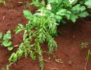

GROUNDNUT :: MINOR DISEASE :: BACTERIAL WILT
Bacterial wilt - Pseudomonas solanacearum
Infected plants appear unhealthy, chlorotic and wilt under water stress. Dark brown discolouration of xylem is seen. Grey slimy liquid ooze out of the vascular bundles.
|  |